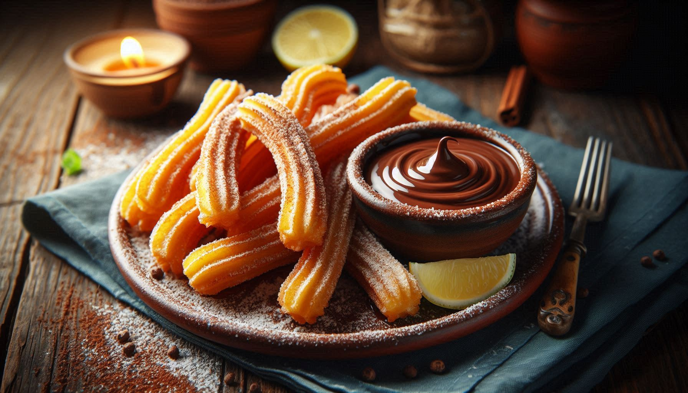

Churros
Los churros son una deliciosa masa frita, espolvoreados con azúcar y canela. ¡Perfectos para acompañar con chocolate caliente!
Los churros son una deliciosa masa frita, espolvoreados con azúcar y canela. ¡Perfectos para acompañar con chocolate caliente!
El pastel de tres leches es un postre húmedo y esponjoso, bañado en una mezcla de tres tipos de leche. ¡Una verdadera delicia!

El flan es un postre clásico, cremoso y suave, cubierto con caramelo. Es perfecto para cualquier ocasión.